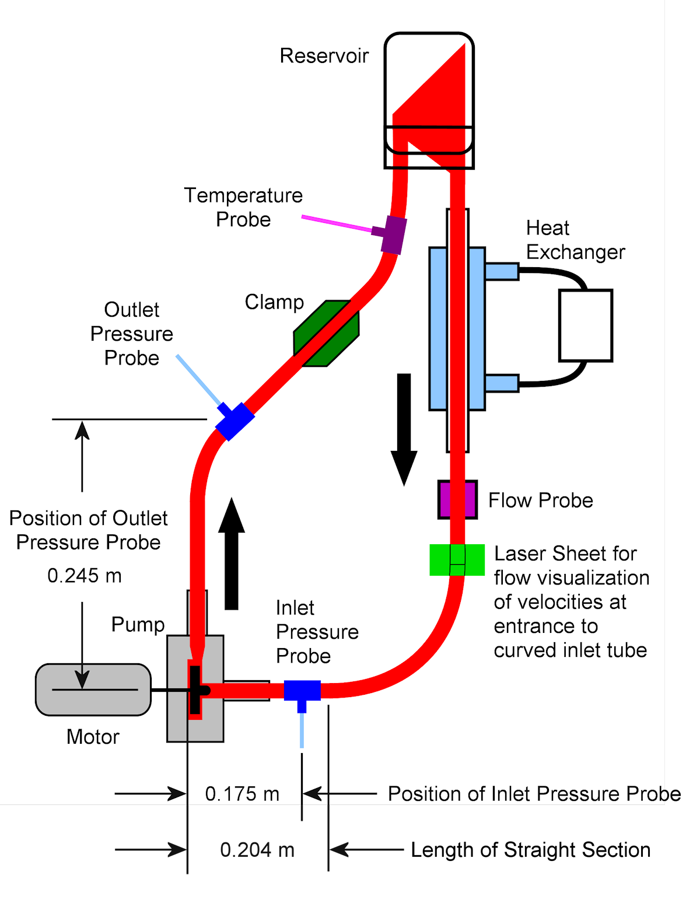
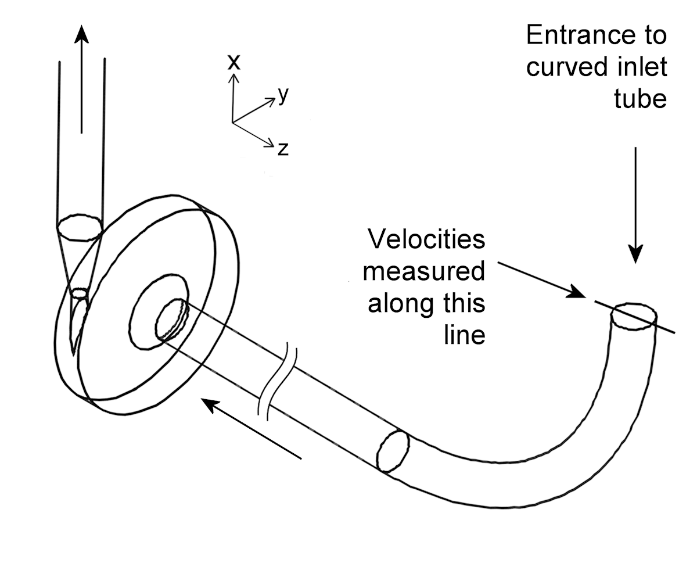

|
|
Experimental Setup for Interlaboratory Study
2: Blood Pump
- The experimental setup (flow
loop dimensions, transducer positions) for the blood damage experiments
and the flow visualization experiments are similar. The main
difference is the fluid used (blood vs. NaI/water/glycerin), and the
flow rates/pump speed in the flow visualization experiments (which were
scaled to reflect the difference in fluid density and viscosity).
- Below is a schematic diagram
of the experimental setup (click on image to see a larger version),
showing the position used to measure velocities at the entrance to the
curved inlet tube.
- The inlet pressure probe is
at the same height as the pump axis, and 0.175 m from the bottom of the
pump chamber. The outlet pressure probe is 0.245 m above the pump axis.
- The schematic below is not
to scale.

- Axial velocities were
measured at the entrance to the curved inlet tube by particle image
velocimetry.

Back To Interlaboratory Study 2: Blood Pump Information
Page
|